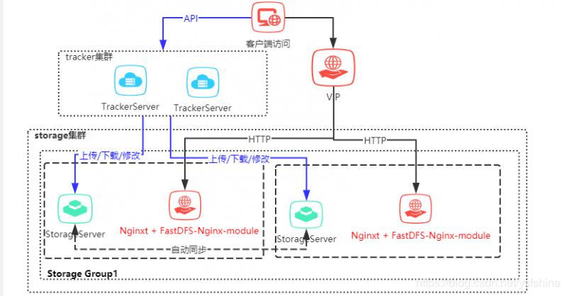

很幸运参与零售云快消平台的公有云搭建及孵化项目。零售云快消平台源于零售云家电3C平台私有项目，是与公司业务强耦合的。为了适用于全场景全品类平台，集团要求项目平台化，我们抢先并承担了此任务。并由我来主要负责平台建设及项目落地。
今天讲解在零售云快消平台中使用的图片服务FastDFS集群搭建说明，此集群模式是根据单机版的安装说明，在之前已经分享过一篇 一张图讲解单机FastDFS图片服务器安装步骤（修订版），改造成最少机器分布式集群安装说明。
FastDFS是一个开源的轻量级分布式文件系统，它对文件进行管理，功能包括：文件存储、文件同步、文件访问（文件上传、文件下载）等，解决了大容量存储和负载均衡的问题。特别适合以文件为载体的在线服务，如相册网站、视频网站等等。
FastDFS为互联网量身定制，充分考虑了冗余备份、负载均衡、线性扩容等机制，并注重高可用、高性能等指标，使用FastDFS很容易搭建一套高性能的文件服务器集群提供文件上传、下载等服务。
--- 来源于百度百科
FastDFS分两部分，跟踪器（tracker）和存储节点（storage）。
Tracker是FastDFS的协调者，负责管理所有的storage server和group，每个storage在启动后会连接Tracker，告知自己所属的group等信息，并保持周期性的心跳，tracker根据storage的心跳信息，建立group==>[storage server list]的映射表。
Storage 是以组（卷，group或volume）为单位组织，一个group内包含多台storage机器，数据互为备份，存储空间以group内容量最小的storage为准，所以建议group内的多个storage尽量配置相同，以免造成存储空间的浪费。
FastDFS是由2008年开始采用C语言研发致今在维护更新，已经广泛使用，创始人余庆 现以有他自己的公众号： 微信号:
fastdfs100， FastDFS官方 github https://github.com/happyfish100/ 已经有多个相关组件

在以下配置中没有说明VIP的配置，后面会对VIP详细说明。
VIP的目的是统一负载storageserver，storageserver的伸缩性不影响使用方的。
libfastcommon 请采用最新版本， 本次使用最新版本： libfastcommon-1.0.42.tar.gz
FastDFS 请采用最新版本， 本次使用最新版本： fastdfs-6.04.tar.gz
fastdfs-nginx-module 请采用最新版本， 本次使用最新版本：fastdfs-nginx-module-1.22.tar.gz
nginx 请采用最新版本， 本次使用最新版本： nginx-1.16.1.tar.gz
操作系统：CentOS 7.X
四台机器 分配情况：
TrackerServer1 ：192.168.0.1
TrackerServer2 ：192.168.0.2
StorageServer1：192.168.0.3
StorageServer2：192.168.0.4
准备上传/opt/apps 目录下：
libfastcommon-1.0.42.tar.gz
fastdfs-6.04.tar.gz准备上传/opt/apps 目录下：
libfastcommon-1.0.42.tar.gz
fastdfs-6.04.tar.gz
fastdfs-nginx-module-1.22.tar.gz
nginx-1.16.1.tar.gztar -zxvf libfastcommon-1.0.42.tar.gz
cd libfastcommon-1.0.42/
./make.sh
./make.sh installtar -zxvf fastdfs-6.04.tar.gz
cd fastdfs-6.04/
./make.sh
./make.sh install
#配置文件准备
cp /etc/fdfs/tracker.conf.sample /etc/fdfs/tracker.conf
cp /etc/fdfs/client.conf.sample /etc/fdfs/client.confvim /etc/fdfs/tracker.conf修改配置如下：
#tracker server端口号
port=22122
#存储日志和数据的根目录
base_path=/opt/fastdfs/trackervim /etc/sysconfig/iptables-A INPUT -m state --state NEW -m tcp -p tcp --dport 22122 -j ACCEPTservice iptables restart
/etc/init.d/fdfs_trackerd start
安装步骤同TrackerServer1
tar -zxvf libfastcommon-1.0.42.tar.gz
cd libfastcommon-1.0.42/
./make.sh
./make.sh install
tar -zxvf fastdfs-6.04.tar.gz
cd fastdfs-6.04/
./make.sh
./make.sh install
#配置文件准备
cp /etc/fdfs/storage.conf.sample /etc/fdfs/storage.conf
cd /opt/apps/fastdfs-6.04/conf
cp http.conf mime.types /etc/fdfs/
vim /etc/fdfs/storage.conf
修改配置如下：
#storage server端口号
port=23000
#数据和日志文件存储根目录
base_path=/opt/fastdfs/storage
#第一个存储目录
store_path0=/opt/fastdfs/storepath0
#tracker服务器IP和端口
tracker_server=192.168.0.1:22122
tracker_server=192.168.0.2:22122
#http访问文件的端口(默认8888,看情况修改,和nginx中保持一致)
http.server_port=8888
#解压fastdfs-nginx-module
tar -zxvf fastdfs-nginx-module-1.22.tar.gz
cd fastdfs-nginx-module-1.22/
cp ./src/mod_fastdfs.conf /etc/fdfs
#解压nginx
tar -zxvf nginx-1.16.1.tar.gz
cd nginx-1.16.1/
#安装nginx_http_image_filter_module
yum -y install gd-devel
#安装依赖组件
yum -y install zlib zlib-devel openssl openssl--devel pcre pcre-devel
#关联模块配置
./configure --add-module=../fastdfs-nginx-module-1.22/src --prefix=/usr/local/nginx --with-http_image_filter_module
#编译nginx
make
#安装nginx
make install
/usr/local/nginx/sbin/nginx -V
查看插件是否安装成功
[root@FastDFS nginx-1.16.1]# /usr/local/nginx/sbin/nginx -V
nginx version: nginx/1.16.1
built by gcc 4.8.5 20150623 (Red Hat 4.8.5-11) (GCC)
configure arguments: --add-module=../fastdfs-nginx-module-1.22/src --prefix=/usr/local/nginx --with-http_image_filter_module
[root@FastDFS nginx-1.16.1]#
修改nginx.conf配置
vim /usr/local/nginx/conf/nginx.conf
修改配置如下：
user nobody;
worker_processes 1;
events {
worker_connections 1024;
}
http {
include mime.types;
default_type application/octet-stream;
sendfile on;
#tcp_nopush on;
#keepalive_timeout 0;
keepalive_timeout 65;
#gzip on;
server {
listen 8888;
server_name localhost;
location ~/group1/M00 {
ngx_fastdfs_module;
}
location / {
root html;
index index.html index.htm;
}
#error_page 404 /404.html;
# redirect server error pages to the static page /50x.html
#
error_page 500 502 503 504 /50x.html;
location = /50x.html {
root html;
}
}
upstream storage_server_group1 {
server 192.168.0.3:8888 weight=10;
server 192.168.0.4:8888 weight=10;
}
}
修改mod_fastdfs.conf配置
vim /etc/fdfs/mod_fastdfs.conf
修改配置如下：
#
connect_timeout=10
#tracker服务器IP和端口
tracker_server=192.168.0.1:22122
tracker_server=192.168.0.2:22122
#是否启用group组名
url_have_group_name=true
#
store_path0=/opt/fastdfs/storepath0
vim /etc/sysconfig/iptables
-A INPUT -m state --state NEW -m tcp -p tcp --dport 8888 -j ACCEPT
-A INPUT -m state --state NEW -m tcp -p tcp --dport 23000 -j ACCEPT
service iptables restart
/etc/init.d/fdfs_storaged start
#启动
/usr/local/nginx/sbin/nginx
#停止
/usr/local/nginx/sbin/nginx -s stop
#重启
/usr/local/nginx/sbin/nginx -s reload
安装步骤同StorageServer1安装过程
vim /etc/fdfs/client.conf
修改配置如下：
#
base_path=/opt/apps/fastdfs/client
#tracker服务器IP和端口
tracker_server=192.168.0.1:22122
tracker_server=192.168.0.2:22122
fdfs_upload_file /etc/fdfs/client.conf test.jpg
或使用以下命令测试
fdfs_test /etc/fdfs/client.conf upload test.jpg
测试结果
[root@ecsf-toj5rfb9 apps]# fdfs_test /etc/fdfs/client.conf upload test.jpg
This is FastDFS client test program v6.04
Copyright (C) 2008, Happy Fish / YuQing
FastDFS may be copied only under the terms of the GNU General
Public License V3, which may be found in the FastDFS source kit.
Please visit the FastDFS Home Page http://www.csource.org/
for more detail.
[2019-11-13 17:53:15] DEBUG - base_path=/opt/fastdfs/client, connect_timeout=10, network_timeout=60, tracker_server_count=2, anti_steal_token=0, anti_steal_secret_key length=0, use_connection_pool=0, g_connection_pool_max_idle_time=3600s, use_storage_id=0, storage server id count: 0
tracker_query_storage_store_list_without_group:
server 1. group_name=, ip_addr=6.0.36.217, port=23000
server 2. group_name=, ip_addr=6.0.36.218, port=23000
group_name=group1, ip_addr=192.168.0.4, port=23000
storage_upload_by_filename
group_name=group1, remote_filename=M00/00/00/BgAk2l3L0oSAAhsuAAHf-RXvI9M055.jpg
source ip address: 192.168.0.4
file timestamp=2019-11-13 17:53:08
file size=122873
file crc32=367993811
example file url: http://192.168.0.4/group1/M00/00/00/BgAk2l3L0oSAAhsuAAHf-RXvI9M055.jpg
storage_upload_slave_by_filename
group_name=group1, remote_filename=M00/00/00/BgAk2l3L0oSAAhsuAAHf-RXvI9M055_big.jpg
source ip address: 192.168.0.4
file timestamp=2019-11-13 17:53:08
file size=122873
file crc32=367993811
example file url: http://192.168.0.4/group1/M00/00/00/BgAk2l3L0oSAAhsuAAHf-RXvI9M055_big.jpg
本文由博客一文多发平台 OpenWrite 发布！
再次感谢!!! 您已看完全文，欢迎关注微信公众号猿码 ，你的支持是我持续更新文章的动力！